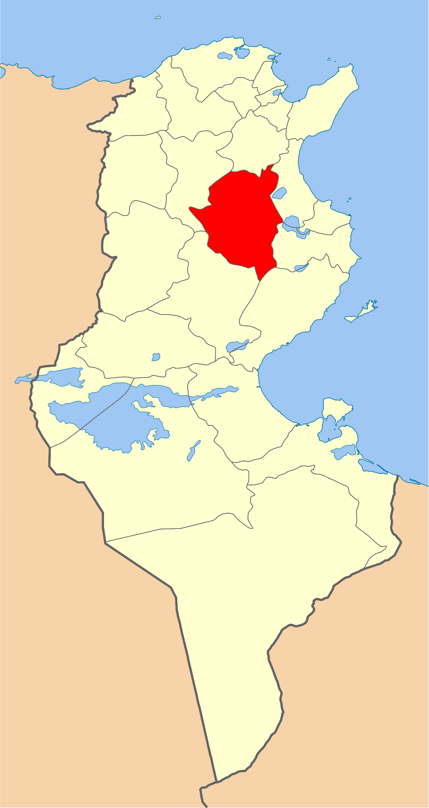
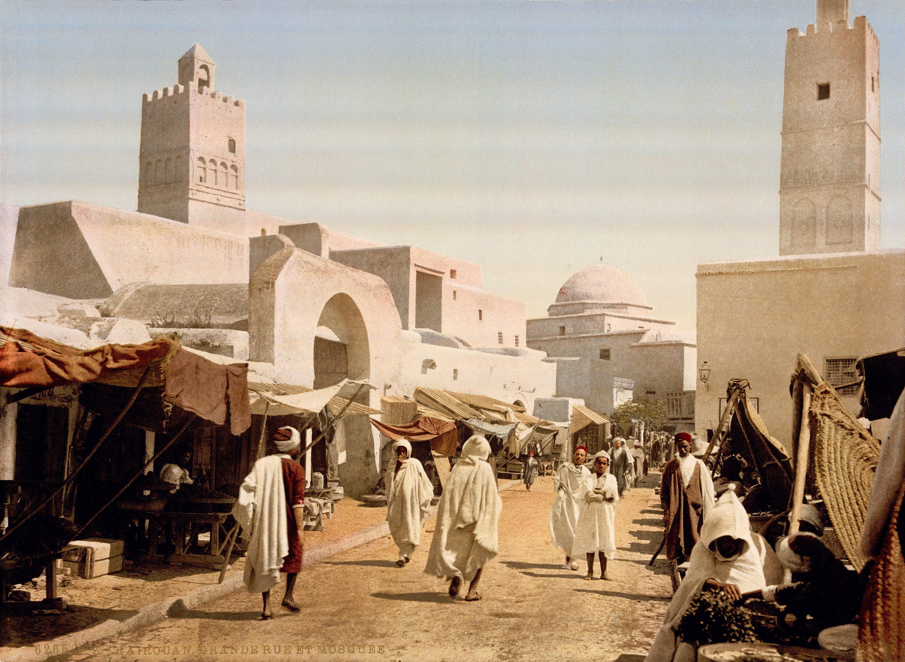
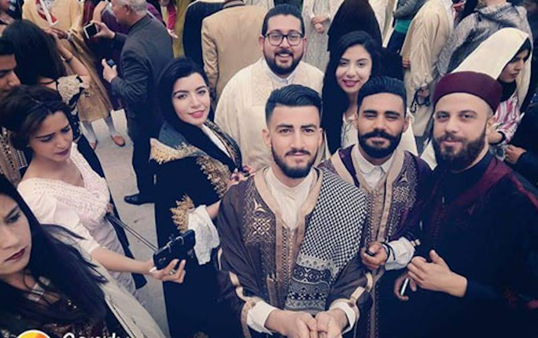
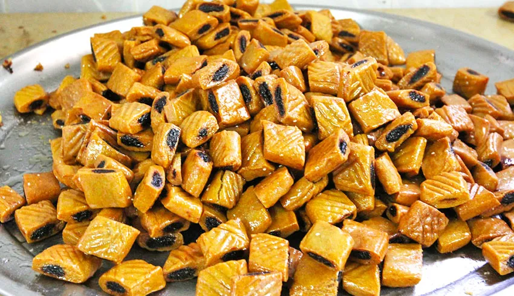
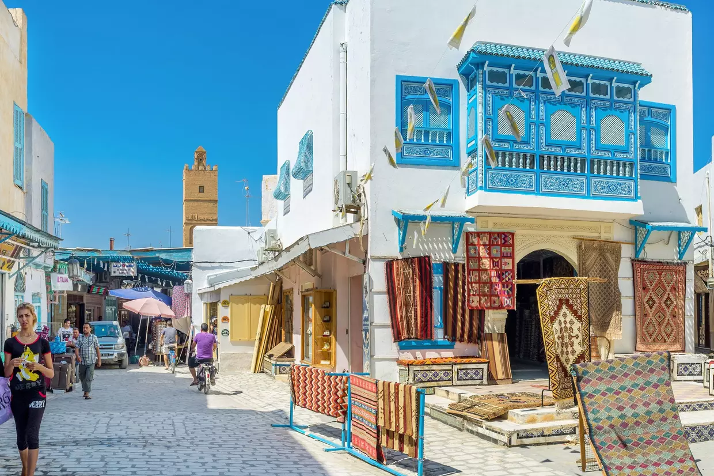
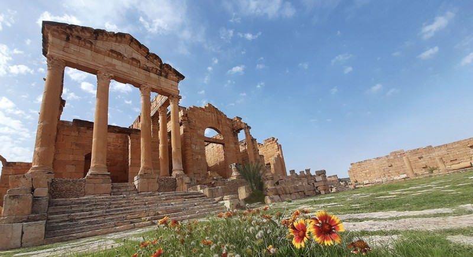

Kairouan
Première ville arabe d'Afrique du Nord6, la ville a été un important centre islamique de l'Afrique du Nord musulmane, l'Ifriqiya, jusqu'au xie siècle. Avec sa médina et ses marchés organisés par corporations à la mode orientale, ses mosquées et autres édifices religieux, Kairouan est inscrite depuis 1988 sur la liste du patrimoine mondial de l'Unesco. En 2009, elle est proclamée capitale de la culture islamique par l'Organisation du monde islamique pour l'éducation, les sciences et la culture.
Mosquée Okba Ibn Nafaa
Mosquée du Barbier
Médina de Kairouan
Mosquée des trois portes
Quelques chiffres
Superficie
68,02 km2
Nombre de maisons
41 000
Habitants
139 070
Localisation
Kairouan est située à 70 kilomètres de la côte méditerranéenne. Son territoire est délimité par Sbikha au nord, Chebika à l'ouest, Bou Hajla et Nasrallah au sud.Le climat de la ville est plus chaud et sec par rapport au littoral.

Histoire
Kairouan a été fondée en 670, par Okba ibn Nafi, un conquérant arabe, à cette époque, elle était une place fortifiée chargée de sécuriser la route allant en Égypte et de protéger le littoral contre les expéditions militaires des Byzantins. Elle devait également surveiller les tribus berbères installées dans les montagnes situées à l'ouest, tribus qui restèrent longtemps insoumises aux Arabes. En 683, les Berbères s'emparent de Kairouan, mais en sont expulsés trois ans plus tard par les Arabes. Du IX au XIe siècle Kairouan est dirigée par les dynasties aghlabide et ziride. Elle est alors la capitale de l'Ifrikiyya. Elle est un grand centre économique, politique et religieux. En 1057, l'invasion hillalienne endommage fortement la ville, qui ne retrouvera pas sa splendeur passée. Dans les années 1880 (quand la France impose son protectorat à la Tunisie), Kairouan avait environ 15 000 habitants.

Culture

hover me
hover me
hover me
hover me